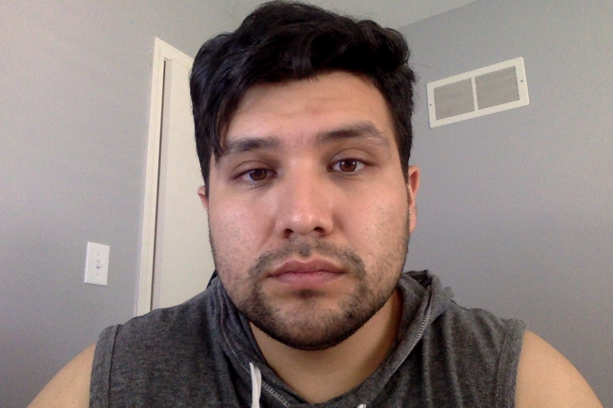

About Me
Hello! my name is, Jorge Dominguez this is part of a big assigment in my life as this is my first time I am creating my own website. I hope, I can definetly go back to this example and see how easy it was compared to all the stress and frustration I am feeling as I am writing this. As far as this project goes I am to talk a little about myself.
I am 27 years old, I graduated with my Bachelor's in Information Systems from Donnelly College. I was
Born in Guadalajara Jalisco home of the tequila! and I was brought to the age of 13 to the United States
and grew up here.
It was a bit hard learning a new language but by my early years as a teenager I was able to pick up the
langauge quickly and it took me about a year and a half to fully speak it. After graduatuion my goal was
to become a system engineer however, I have always liked code and wanted to learn more about it and the
KU Boot camp program seemed to put those skills to the test and I hope to become a software engineer
instead.